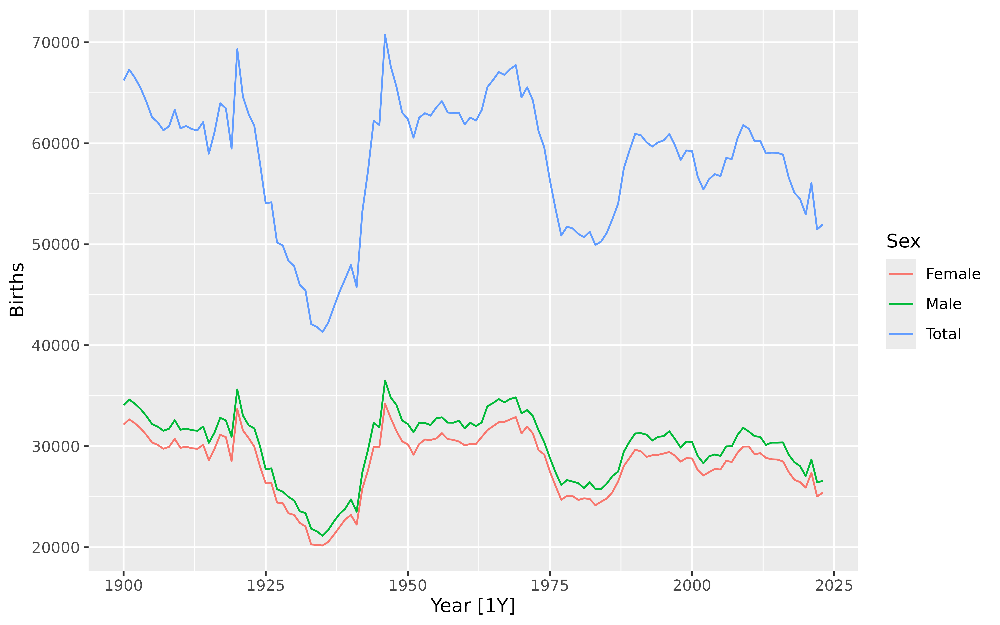
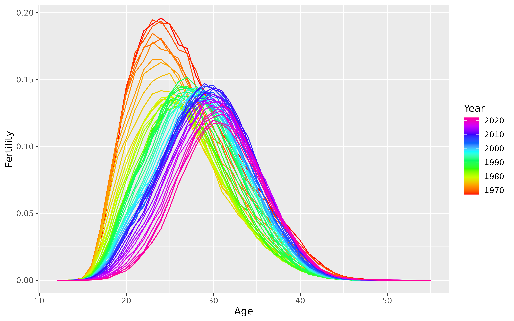

norway_births is an annual vital object covering the years 1900-2023, as provided
by the Human Mortality Database on 19 August 2025.
norway_fertility is an annual vital covering the years 1967-2022, as provided
by the Human Fertility Database on 19 August 2025.
norway_mortality is an annual vital covering the years 1900-2023, as provided
by the Human Mortality Database on 19 August 2025.
Source
Human Mortality Database https://mortality.org
Human Fertility Database https://www.humanfertility.org
Examples
library(ggplot2)
# Births
norway_births
#> # A vital: 372 x 3 [1Y]
#> # Key: Sex [3]
#> Year Sex Births
#> <int> <chr> <int>
#> 1 1900 Female 32150
#> 2 1900 Male 34079
#> 3 1900 Total 66229
#> 4 1901 Female 32671
#> 5 1901 Male 34632
#> 6 1901 Total 67303
#> 7 1902 Female 32279
#> 8 1902 Male 34215
#> 9 1902 Total 66494
#> 10 1903 Female 31782
#> # ℹ 362 more rows
norway_births |>
autoplot(Births)

# Deaths
norway_mortality
#> # A vital: 41,292 x 7 [1Y]
#> # Key: Age x Sex [111 x 3]
#> Year Age OpenInterval Sex Population Deaths Mortality
#> <int> <int> <lgl> <chr> <dbl> <dbl> <dbl>
#> 1 1900 0 FALSE Female 30070 2376. 0.0778
#> 2 1900 1 FALSE Female 28960 842 0.0290
#> 3 1900 2 FALSE Female 28043 348 0.0123
#> 4 1900 3 FALSE Female 27019 216. 0.00786
#> 5 1900 4 FALSE Female 26854 168. 0.00624
#> 6 1900 5 FALSE Female 25569 140. 0.00538
#> 7 1900 6 FALSE Female 25534 108. 0.00422
#> 8 1900 7 FALSE Female 24314 93.5 0.00376
#> 9 1900 8 FALSE Female 24979 93.5 0.00380
#> 10 1900 9 FALSE Female 24428 90 0.00365
#> # ℹ 41,282 more rows
norway_mortality |>
dplyr::filter(Age < 85, Year < 1950, Sex != "Total") |>
autoplot(Mortality) +
scale_y_log10()
# Fertility
norway_fertility
#> # A vital: 2,464 x 4 [1Y]
#> # Key: Age [44 x 1]
#> Year Age Fertility OpenInterval
#> <int> <int> <dbl> <lgl>
#> 1 1967 12 0.00003 TRUE
#> 2 1967 13 0 FALSE
#> 3 1967 14 0.0001 FALSE
#> 4 1967 15 0.00094 FALSE
#> 5 1967 16 0.00753 FALSE
#> 6 1967 17 0.0258 FALSE
#> 7 1967 18 0.0644 FALSE
#> 8 1967 19 0.102 FALSE
#> 9 1967 20 0.142 FALSE
#> 10 1967 21 0.166 FALSE
#> # ℹ 2,454 more rows
norway_fertility |>
autoplot(Fertility)
